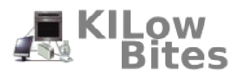

I am expected to graduate from James Madison University in May 2025 with a B.S. in Computer Science. I will also graduate with a minor in Geographic Information Systems, where I have developed an interest using remote sensing and satellite imagery as tools to support environmental analysis. I have also completed a Spanish minor, which has strengthened my ability to connect with diverse communities and broadened my perspective on global issues.
AssignMint is an assignment tracker built to help students stay organized. Over the past two years, my teammate, Raphie, developed the core application, and I now contribute by implementing new features and refining the user experience. Today, AssignMint supports almost 200 active users and continues to grow with a modern, responsive interface built in React, TypeScript, and Tailwind CSS.
use 'java -jar KiloBites.jar' to run it!
KilowBites is a meal planning app where users can create custom recipes, meals, and ingredient lists. It calculates calories and costs (adjusted for servings), and includes an interactive recipe mode that guides you step by step. I collaborated with a five-person team, using Scrum and test-driven development to guide our work.
As a Web & Outreach Intern at BrydgeWorks Glass Studio, I designed and launched a new website using Square to replace the outdated platform. I prioritized accessibility and clear messaging to promote sales and improve customer retention. Within two months of launch, the website generated over $3,500 in sales. In my ongoing role, I maintain the site by posting new classes and managing content, and I also create and distribute a monthly newsletter to 700+ subscribers.
As the Study Abroad Operations Intern and JMU's Center for Global Engagement, I support a cohort of ~1,000 students each application cycle by updating program information, running analytics reports, and assisting with day-to-day office operations. I communicate regularly with over 200 program directors, to ensure accuracy and consistency in program proposals. I contribute to major initiatives, including helping set up the Study Abroad Fair and speaking on panels to promote international opportunities.
Python, Java, C, JavaScript, HTML, CSS, TypeScript, SQLite, PostgreSQL, pgAdmin
Git/GitHub, Eclipse, VS Code, ArcGIS, n8n
Agile (Scrum), Test-Driven Development, Object Oriented Programming